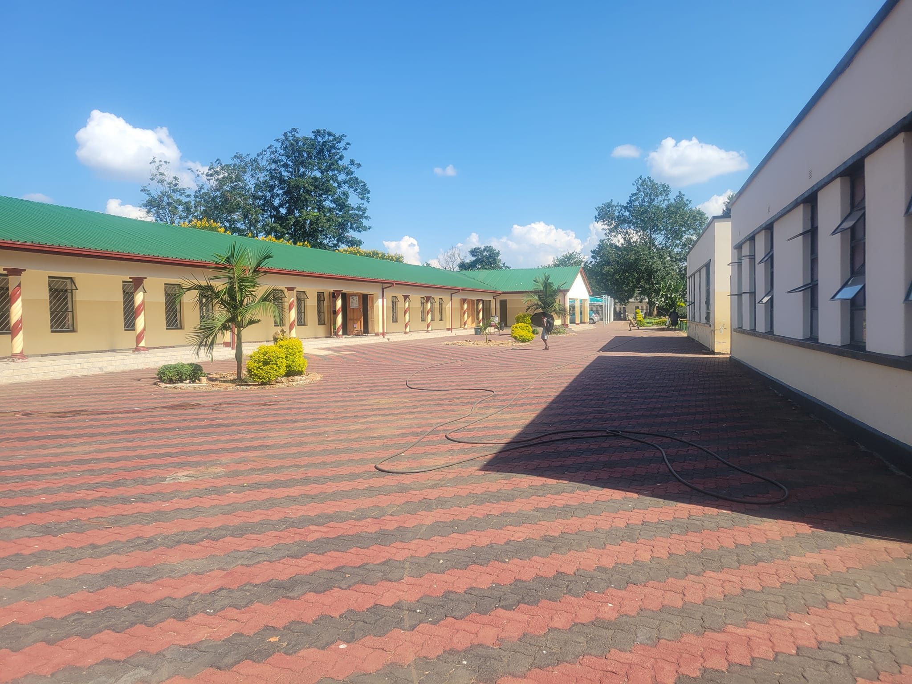
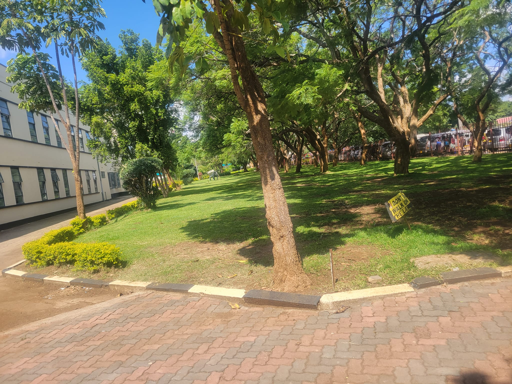

We’re committed to collaborating with the Blakiston Junior School administration, so that we can support the school in the best way possible, in order for the school to continue to achieve its aims & objectives.
In addition, the Blakiston Old Students Association (BOSA) is the official association for anyone who attended Blakiston Junior School, or has some significant connection with the school. We aim to enhance a highly engaged, vibrant community of alumni and friends worldwide, whilst supporting the school as a united body.
The Blakiston Old Students Association was founded to enable any former student of Blakiston Junior School, wherever they are in the world and whatever they are doing, to maintain lifelong connections with the School and with each other.
We're on a mission to help Blakiston Junior School continue to give students an opportunity to develop their intellectual curiosity.
There is always a thin line that differentiates a good school from a great school, and it is our belief that the strength of the involvement of our membership and partners should enable Blakiston Junior School to be considered a great school. Lets all aspire to always act in the best interests of Blakiston Junior School, because the school deserves our time, money and gratitude.
Every school should aim to make sure that each and every student who passes through their gates maintains some sort of connection with the school, and that the relationship lasts throughout life. BOSA supports our alma mater so that the next generation of students gets the best foundation in their early development. Every Blakiston Junior School student should have an equal opportunity to become whatever individual they aspire to be.
Our aims and objectives are as follows;
©Copyright 2022, Blakiston Old Students Association, All Rights Reserved.